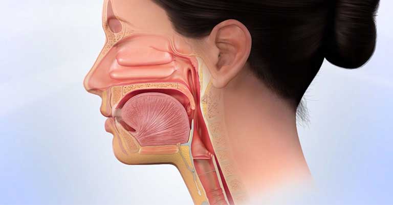
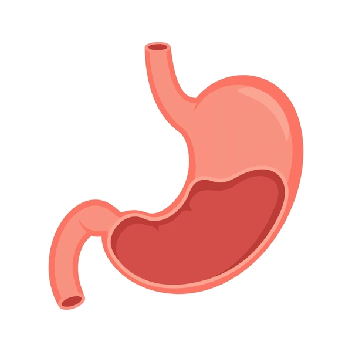
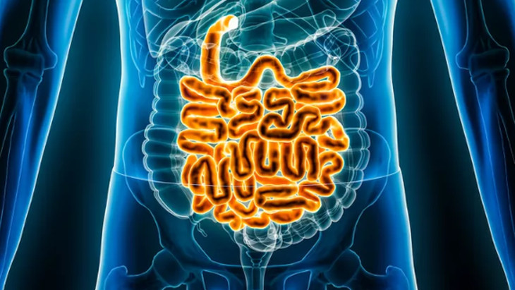
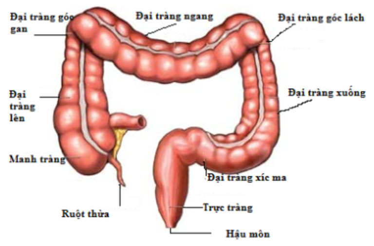

Tổng Quan
Hệ tiêu hóa là hệ thống xử lý thức ăn, hấp thu chất dinh dưỡng và loại bỏ chất thải ra khỏi cơ thể. Hệ thống này bao gồm đường tiêu hóa (từ miệng đến hậu môn) và các cơ quan phụ trợ như gan, túi mật và tuyến tụy.
Các Cơ Quan Chính
Miệng & Thực Quản
Quá trình tiêu hóa bắt đầu từ miệng với sự nhai và trộn thức ăn với nước bọt. Thực quản là ống cơ vận chuyển thức ăn từ hầu đến dạ dày.
Dạ Dày
Là cơ quan hình chữ J, có thành cơ dày co bóp mạnh để nghiền và trộn thức ăn với dịch vị chứa acid và enzyme tiêu hóa protein.
Ruột Non
Là nơi chính diễn ra quá trình tiêu hóa và hấp thu chất dinh dưỡng. Dài khoảng 6-7 mét với bề mặt niêm mạc có nhiều nhung mao.
Ruột Già & Trực Tràng
Ruột già hấp thu nước và điện giải, hình thành và lưu trữ phân. Trực tràng là phần cuối cùng, chứa phân trước khi thải ra ngoài.
Quá Trình Tiêu Hóa
Nhai & nuốt
Tiêu hóa tại dạ dày
Tiêu hóa tại ruột non
Hấp thu chất dinh dưỡng
Bài tiết chất thải
Thông Tin Thú Vị
- Ruột non dài khoảng 6-7 mét, ruột già dài khoảng 1.5 mét
- Dạ dày sản xuất khoảng 2 lít dịch vị mỗi ngày
- Toàn bộ quá trình tiêu hóa mất từ 24 đến 72 giờ
- Ruột non có diện tích bề mặt hấp thu lên tới 250 m²
- Gan là cơ quan nội tạng lớn nhất, thực hiện hơn 500 chức năng